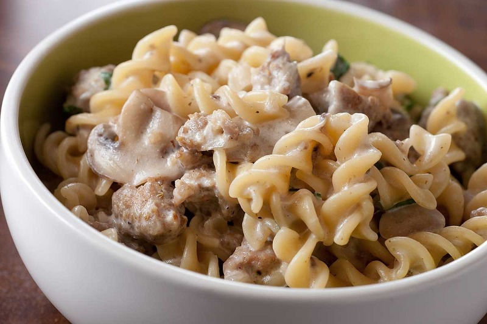

back to menu
Pasta alla Boscaiola
The "Boscaiola" is a rich mushroom-based sauce that can be enriched with different combinations of meats. Another all time favourite, but best enjoyed during fall.
A cozy, hearthy meal for the colder months.

Ingredients for two people:
Everything should be readily available at any grocery store.
- 3 Tbsp of Olive oil
- 2 cloves of Garlic
- 200g of Pasta: Rigatoni, Fusilli, Penne, etc. Any short pasta will do.
- 150g of sausage: You can interchange this with Ragu, Pancetta or Guanciale.
- 150g of Oyster mushrooms: Incredibly meaty and savoury mushroom
- 100ml of Cooking cream: Called "Panna da cucina" in Italy. Cooking cream was the closest thing I found. Just don't get the sweet one.
- 15g of grated cheese: Any salty, hard cheese works great for this dish.
- Ground pepper to taste: Freshly ground for more aroma.
How to make it
Start by setting your pot to boil. In the meanwhile chop your garlic and mushrooms. Heat your pan on medium heat an add your olive oil. Crumble the sausage in the pan and let it fry until slightly brown, then add your mushrooms and garlic. Add a pinch of salt and pepper and toss for a few minutes and lower your heat to medium-low. Add your cooking cream, stir and cover for 5 minutes. Your water should be boiling by now but if not, add 1 1/2 tsp of salt as soon as it does and throw in your pasta. Back to the pan. Take the lid off; the sauce should be creamy brown and reduced a bit. Add a bit of pasta water to your desired creaminess. When your pasta is done, mix everything together with your grated cheese.
Step by step:
- Start by setting a pot of water to boil.
- Chop the garlic into strips and set aside.
- Clean your mushrooms by cutting the lower, hard stem. No need to wash them, just pat them with a napkin or dry cloth. Cut them into strips and set aside.
- Set a pan on medium heat and add the Olive oil. Remove the casing from the sausages and crumble them into your pan.
- Stir and fry until slightly brown in colour. Then add the cut mushrooms and garlic with a pinch of salt and pepper.
- Keep stirfrying for 2 to 3 minutes, then add the cooking cream. Mix and close with a lid. Let cook for 5 minutes on medium-low heat.
- Your water should be boiling now. Just salt the pot with 1 and 1/2 tsp of salt and drop in your pasta.
- While your pasta cooks, check on the sauce: the cream should have reduced a bit and turned brownish. Add a couple of splashes of starchy water from your boiling pasta to help it mix later.
- When your pasta is done, drain the pot.
- Mix your pasta in your pan with the sauce and mix well.
- Turn off the heat and add the grated cheese and ground pepper.
Well done! Enjoy!
back to menu